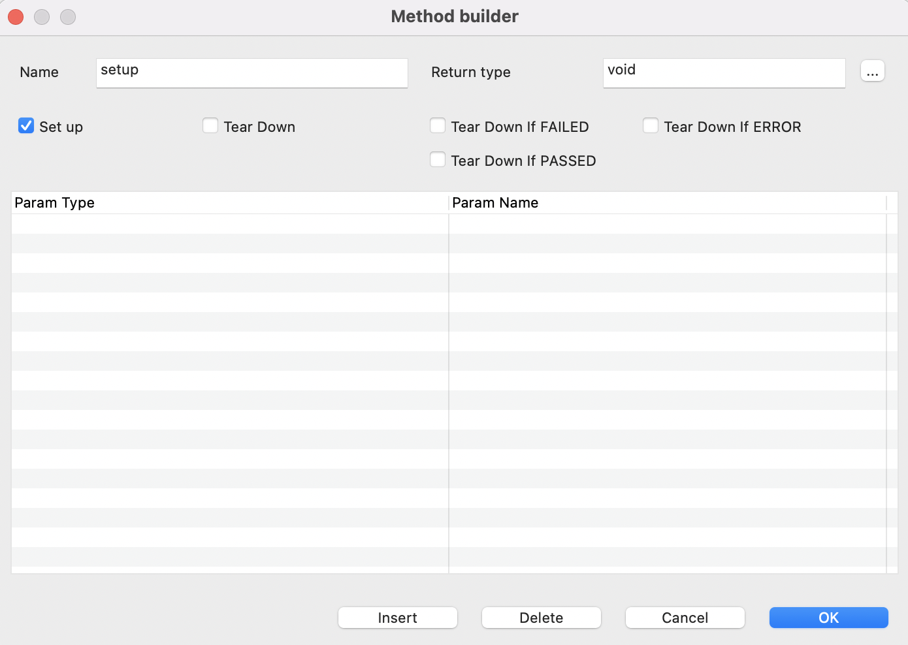
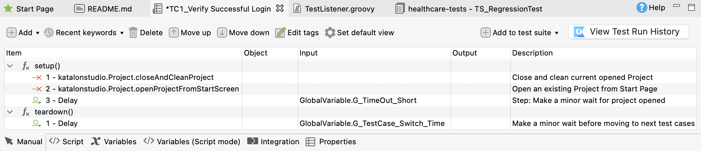

Add setUp and tearDown in manual view of a test case
In the manual view of a test case, you can add the setUp and tearDown method by following these steps:
- Click on the drop-down button of the Add icon and choose Method. To learn more about the method statement, see Define Method.The Method builder dialog appears.
- Enter your method's name and its return value, then choose one of the options below:
Method Description Set Up This method is always called first, before executing the main test steps. Tear Down If Failed This method is called after executing all steps of the test case, if one of those steps is marked as Failed. Tear Down If Passed This method is called after executing all steps of the test case, if all of those steps are marked as Pass. Tear Down If Error This method is called after executing all the test case steps, if one of those steps is marked as Error. Tear Down This method is called at the end of an execution. - To add a test step under a method, choose the line of that method, then click Add. A new keyword is added under that method.

Note:The setUp/tearDown methods might be marked as Error if any issue occurs during their execution. The possible exception is when the AssertionError class is used, or if the methods are skipped.